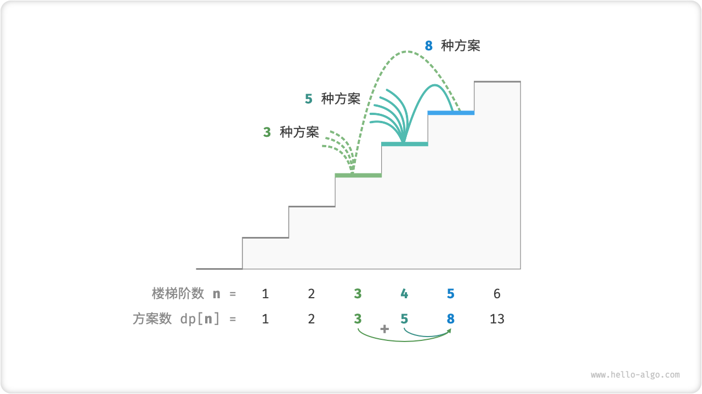
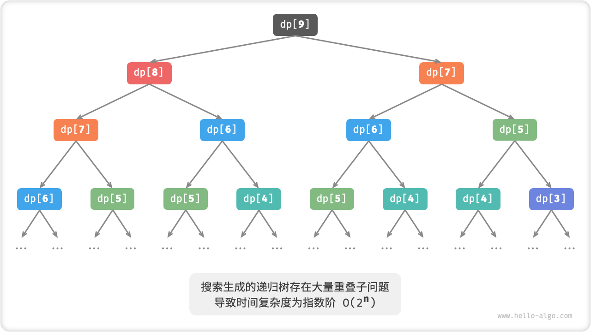

13.1. 初探动态规划¶
「动态规划 Dynamic Programming」是一种用于解决复杂问题的优化算法，它把一个问题分解为一系列更小的子问题，并把子问题的解存储起来以供后续使用，从而避免了重复计算，提升了解题效率。
在本节中，我们先从一个动态规划的经典例题入手，先给出它的暴力回溯解法，观察其中包含的重叠子问题，再一步步导出更高效的动态规划解法。
爬楼梯
给定一个共有 \(n\) 阶的楼梯，你每步可以上 \(1\) 阶或者 \(2\) 阶，请问有多少种方案可以爬到楼顶。
如下图所示，对于一个 \(3\) 阶楼梯，共有 \(3\) 种方案可以爬到楼顶。

Fig. 爬到第 3 阶的方案数量
本题的目标是求解方案数量，我们可以考虑通过回溯来穷举所有可能性。具体来说，将爬楼梯想象为一个多轮选择的过程：从地面出发，每轮选择上 \(1\) 阶或 \(2\) 阶，每当到达楼梯顶部时就将方案数量加 \(1\) ，当越过楼梯顶部时就将其剪枝。
/* 回溯 */
void backtrack(List<Integer> choices, int state, int n, List<Integer> res) {
// 当爬到第 n 阶时，方案数量加 1
if (state == n)
res.set(0, res.get(0) + 1);
// 遍历所有选择
for (Integer choice : choices) {
// 剪枝：不允许越过第 n 阶
if (state + choice > n)
break;
// 尝试：做出选择，更新状态
backtrack(choices, state + choice, n, res);
// 回退
}
}
/* 爬楼梯：回溯 */
int climbingStairsBacktrack(int n) {
List<Integer> choices = Arrays.asList(1, 2); // 可选择向上爬 1 或 2 阶
int state = 0; // 从第 0 阶开始爬
List<Integer> res = new ArrayList<>();
res.add(0); // 使用 res[0] 记录方案数量
backtrack(choices, state, n, res);
return res.get(0);
}
/* 回溯 */
void backtrack(vector<int> &choices, int state, int n, vector<int> &res) {
// 当爬到第 n 阶时，方案数量加 1
if (state == n)
res[0]++;
// 遍历所有选择
for (auto &choice : choices) {
// 剪枝：不允许越过第 n 阶
if (state + choice > n)
break;
// 尝试：做出选择，更新状态
backtrack(choices, state + choice, n, res);
// 回退
}
}
/* 爬楼梯：回溯 */
int climbingStairsBacktrack(int n) {
vector<int> choices = {1, 2}; // 可选择向上爬 1 或 2 阶
int state = 0; // 从第 0 阶开始爬
vector<int> res = {0}; // 使用 res[0] 记录方案数量
backtrack(choices, state, n, res);
return res[0];
}
def backtrack(choices: list[int], state: int, n: int, res: list[int]) -> int:
"""回溯"""
# 当爬到第 n 阶时，方案数量加 1
if state == n:
res[0] += 1
# 遍历所有选择
for choice in choices:
# 剪枝：不允许越过第 n 阶
if state + choice > n:
break
# 尝试：做出选择，更新状态
backtrack(choices, state + choice, n, res)
# 回退
def climbing_stairs_backtrack(n: int) -> int:
"""爬楼梯：回溯"""
choices = [1, 2] # 可选择向上爬 1 或 2 阶
state = 0 # 从第 0 阶开始爬
res = [0] # 使用 res[0] 记录方案数量
backtrack(choices, state, n, res)
return res[0]
/* 回溯 */
void backtrack(List<int> choices, int state, int n, List<int> res) {
// 当爬到第 n 阶时，方案数量加 1
if (state == n)
res[0]++;
// 遍历所有选择
foreach (int choice in choices) {
// 剪枝：不允许越过第 n 阶
if (state + choice > n)
break;
// 尝试：做出选择，更新状态
backtrack(choices, state + choice, n, res);
// 回退
}
}
/* 爬楼梯：回溯 */
int climbingStairsBacktrack(int n) {
List<int> choices = new List<int> { 1, 2 }; // 可选择向上爬 1 或 2 阶
int state = 0; // 从第 0 阶开始爬
List<int> res = new List<int> { 0 }; // 使用 res[0] 记录方案数量
backtrack(choices, state, n, res);
return res[0];
}
13.1.1. 方法一：暴力搜索¶
回溯算法通常并不显式地对问题进行拆解，而是将问题看作一系列决策步骤，通过试探和剪枝，搜索所有可能的解。
对于本题，我们可以尝试将问题拆解为更小的子问题。设爬到第 \(i\) 阶共有 \(dp[i]\) 种方案，那么 \(dp[i]\) 就是原问题，其子问题包括:
由于每轮只能上 \(1\) 阶或 \(2\) 阶，因此当我们站在第 \(i\) 阶楼梯上时，上一轮只可能站在第 \(i - 1\) 阶或第 \(i - 2\) 阶上，换句话说，我们只能从第 \(i -1\) 阶或第 \(i - 2\) 阶前往第 \(i\) 阶。因此，爬到第 \(i - 1\) 阶的方案数加上爬到第 \(i - 2\) 阶的方案数就等于爬到第 \(i\) 阶的方案数，即：

Fig. 方案数量递推关系
也就是说，在爬楼梯问题中，各个子问题之间不是相互独立的，原问题的解可以由子问题的解构成。
我们可以基于此递推公式写出暴力搜索代码：以 \(dp[n]\) 为起始点，从顶至底地将一个较大问题拆解为两个较小问题的和，直至到达最小子问题 \(dp[1]\) 和 \(dp[2]\) 时返回。其中，最小子问题的解是已知的，即爬到第 \(1\) , \(2\) 阶分别有 \(1\) , \(2\) 种方案。
观察以下代码，它与回溯解法都属于深度优先搜索，但比回溯算法更加简洁。
下图展示了该方法形成的递归树。对于问题 \(dp[n]\) ，递归树的深度为 \(n\) ，时间复杂度为 \(O(2^n)\) 。指数阶的运行时间增长地非常快，如果我们输入一个比较大的 \(n\) ，则会陷入漫长的等待之中。

Fig. 爬楼梯对应递归树
实际上，指数阶的时间复杂度是由于「重叠子问题」导致的。例如，问题 \(dp[9]\) 被分解为子问题 \(dp[8]\) 和 \(dp[7]\) ，问题 \(dp[8]\) 被分解为子问题 \(dp[7]\) 和 \(dp[6]\) ，两者都包含子问题 \(dp[7]\) ，而子问题中又包含更小的重叠子问题，子子孙孙无穷尽也，绝大部分计算资源都浪费在这些重叠的问题上。
13.1.2. 方法二：记忆化搜索¶
为了提升算法效率，我们希望所有的重叠子问题都只被计算一次。具体来说，考虑借助一个数组 mem 来记录每个子问题的解，并在搜索过程中这样做：
- 当首次计算 \(dp[i]\) 时，我们将其记录至
mem[i]，以便之后使用； - 当再次需要计算 \(dp[i]\) 时，我们便可直接从
mem[i]中获取结果，从而将重叠子问题剪枝；
/* 记忆化搜索 */
int dfs(int i, int[] mem) {
// 已知 dp[1] 和 dp[2] ，返回之
if (i == 1 || i == 2)
return i;
// 若存在记录 dp[i] ，则直接返回之
if (mem[i] != -1)
return mem[i];
// dp[i] = dp[i-1] + dp[i-2]
int count = dfs(i - 1, mem) + dfs(i - 2, mem);
// 记录 dp[i]
mem[i] = count;
return count;
}
/* 爬楼梯：记忆化搜索 */
int climbingStairsDFSMem(int n) {
// mem[i] 记录爬到第 i 阶的方案总数，-1 代表无记录
int[] mem = new int[n + 1];
Arrays.fill(mem, -1);
return dfs(n, mem);
}
/* 记忆化搜索 */
int dfs(int i, vector<int> &mem) {
// 已知 dp[1] 和 dp[2] ，返回之
if (i == 1 || i == 2)
return i;
// 若存在记录 dp[i] ，则直接返回之
if (mem[i] != -1)
return mem[i];
// dp[i] = dp[i-1] + dp[i-2]
int count = dfs(i - 1, mem) + dfs(i - 2, mem);
// 记录 dp[i]
mem[i] = count;
return count;
}
/* 爬楼梯：记忆化搜索 */
int climbingStairsDFSMem(int n) {
// mem[i] 记录爬到第 i 阶的方案总数，-1 代表无记录
vector<int> mem(n + 1, -1);
return dfs(n, mem);
}
def dfs(i: int, mem: list[int]) -> int:
"""记忆化搜索"""
# 已知 dp[1] 和 dp[2] ，返回之
if i == 1 or i == 2:
return i
# 若存在记录 dp[i] ，则直接返回之
if mem[i] != -1:
return mem[i]
# dp[i] = dp[i-1] + dp[i-2]
count = dfs(i - 1, mem) + dfs(i - 2, mem)
# 记录 dp[i]
mem[i] = count
return count
def climbing_stairs_dfs_mem(n: int) -> int:
"""爬楼梯：记忆化搜索"""
# mem[i] 记录爬到第 i 阶的方案总数，-1 代表无记录
mem = [-1] * (n + 1)
return dfs(n, mem)
/* 记忆化搜索 */
int dfs(int i, int[] mem) {
// 已知 dp[1] 和 dp[2] ，返回之
if (i == 1 || i == 2)
return i;
// 若存在记录 dp[i] ，则直接返回之
if (mem[i] != -1)
return mem[i];
// dp[i] = dp[i-1] + dp[i-2]
int count = dfs(i - 1, mem) + dfs(i - 2, mem);
// 记录 dp[i]
mem[i] = count;
return count;
}
/* 爬楼梯：记忆化搜索 */
int climbingStairsDFSMem(int n) {
// mem[i] 记录爬到第 i 阶的方案总数，-1 代表无记录
int[] mem = new int[n + 1];
Array.Fill(mem, -1);
return dfs(n, mem);
}
观察下图，经过记忆化处理后，所有重叠子问题都只需被计算一次，时间复杂度被优化至 \(O(n)\) ，这是一个巨大的飞跃。实际上，如果不考虑递归带来的额外开销，记忆化搜索解法已经几乎等同于动态规划解法的时间效率。

Fig. 记忆化搜索对应递归树
13.1.3. 方法三：动态规划¶
记忆化搜索是一种“从顶至底”的方法：我们从原问题（根节点）开始，递归地将较大子问题分解为较小子问题，直至解已知的最小子问题（叶节点）；最终通过回溯将子问题的解逐层收集，得到原问题的解。
我们也可以直接“从底至顶”进行求解，得到标准的动态规划解法：从最小子问题开始，迭代地求解较大子问题，直至得到原问题的解。
由于动态规划不包含回溯过程，因此无需使用递归，而可以直接基于递推实现。我们初始化一个数组 dp 来存储子问题的解，从最小子问题开始，逐步求解较大子问题。在以下代码中，数组 dp 起到了记忆化搜索中数组 mem 相同的记录作用。
与回溯算法一样，动态规划也使用“状态”概念来表示问题求解的某个特定阶段，每个状态都对应一个子问题以及相应的局部最优解。例如对于爬楼梯问题，状态定义为当前所在楼梯阶数。动态规划的常用术语包括：
- 将 \(dp\) 数组称为「状态列表」，\(dp[i]\) 代表第 \(i\) 个状态的解；
- 将最简单子问题对应的状态（即第 \(1\) , \(2\) 阶楼梯）称为「初始状态」；
- 将递推公式 \(dp[i] = dp[i-1] + dp[i-2]\) 称为「状态转移方程」；

Fig. 爬楼梯的动态规划过程
细心的你可能发现，由于 \(dp[i]\) 只与 \(dp[i-1]\) 和 \(dp[i-2]\) 有关，因此我们无需使用一个数组 dp 来存储所有状态，而只需两个变量滚动前进即可。如以下代码所示，由于省去了数组 dp 占用的空间，因此空间复杂度从 \(O(n)\) 降低至 \(O(1)\) 。
我们将这种空间优化技巧称为「状态压缩」。在许多动态规划问题中，当前状态仅与前面有限个状态有关，不必保存所有的历史状态，这时我们可以应用状态压缩，只保留必要的状态，通过“降维”来节省内存空间。
总的看来，子问题分解是一种通用的算法思路，在分治算法、动态规划、回溯算法中各有特点：
- 分治算法将原问题划分为几个独立的子问题，然后递归解决子问题，最后合并子问题的解得到原问题的解。例如，归并排序将长数组不断划分为两个短子数组，再将排序好的子数组合并为排序好的长数组。
- 动态规划也是将原问题分解为多个子问题，但与分治算法的主要区别是，动态规划中的子问题往往不是相互独立的，原问题的解依赖于子问题的解，而子问题的解又依赖于更小的子问题的解。因此，动态规划通常会引入记忆化，保存已经解决的子问题的解，避免重复计算。
- 回溯算法在尝试和回退中穷举所有可能的解，并通过剪枝避免不必要的搜索分支。原问题的解由一系列决策步骤构成，我们可以将每个决策步骤之后的剩余问题看作为一个子问题。